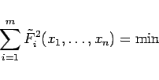

Inhalt Index DeskTop Bronstein

 Numerische Mathematik Numerische Lösung von Gleichungssystemen Nichtlineare Gleichungssysteme
Numerische Mathematik Numerische Lösung von Gleichungssystemen Nichtlineare Gleichungssysteme


Zur Lösung der Quadratmittelaufgabe (19.24) geht man im nichtlinearen Fall (nichtlineare Ausgleichsaufgabe) iterativ wie folgt vor:
|  | (19.66) |
z.B. mit Hilfe der Normalgleichungen (19.42), oder des HOUSEHOLDER-Verfahrens.
Wenn die Berechnung der partiellen Ableitungen